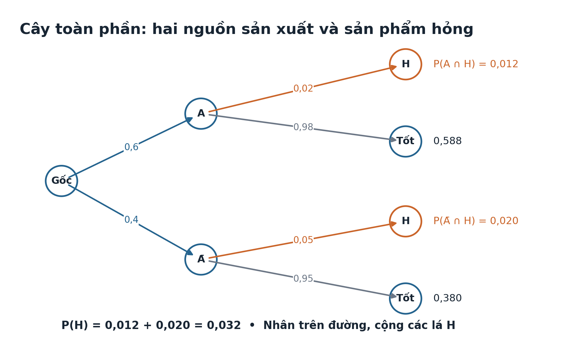
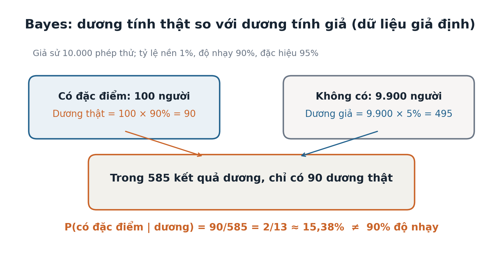

Toán 12 · Bài 19. Công thức xác suất toàn phần và công thức Bayes
TOÁN 12 · CHƯƠNG VI · SGK KẾT NỐI TRI THỨC · TẬP HAI
Từ bản chất đến công thức, ví dụ giải có lý do, đọc hình và Tự thử trước khi vào Core.
1. Vì sao cần học
Biết từng nhóm có cơ hội B xảy ra không đủ để suy ngay xác suất B trong cả dân số: phải tính theo tỷ lệ từng nhóm. Đặc biệt, khi thấy kết quả B (ví dụ một sản phẩm hỏng), ta còn muốn biết nó đến từ nhóm nào; đây là câu hỏi đảo điều kiện, cần Bayes, không phải đọc ngay xác suất hỏng khi biết nguồn.
2. Kiến thức tiền đề
Nắm A, Ā, giao, biến cố xung khắc, P(A)+P(Ā)=1, công thức nhân xác suất có điều kiện (B18), đọc bảng và sơ đồ cây. Tự kiểm: “0,6 sản phẩm từ A có lỗi 0,02, phần còn lại lỗi 0,05. Xác suất toàn xưởng lỗi có phải (0,02+0,05)/2 không?” — Không, vì hai nhóm không ngang tỷ trọng.
3. Hiểu bản chất trước công thức
B xảy ra theo hai đường không trùng: A rồi B hoặc Ā rồi B. Hai giao biến cố xung khắc và hợp bằng B nên P(B)=P(A∩B)+P(Ā∩B). Áp dụng công thức nhân từng nhánh được P(B)=P(A)P(B|A)+P(Ā)P(B|Ā). Khi biết B đã xảy ra, trong số toàn bộ các trường hợp B, phần thuộc A là P(A∩B)/P(B). Vì thế P(A|B) = P(A)P(B|A)/P(B) khi P(B)>0. Đây là Bayes, không phải một công thức tự nhiên phải nhớ trước khi hiểu cây.
4. Kiến thức, điều kiện và ví dụ có suy luận
Chia không gian thành hai trường hợp A và biến cố đối
Mục tiêu: Chia không gian thành hai trường hợp A và biến cố đối. D1 — Họ dạng: Phân hoạch hai trường hợp.
Vì sao: Khi không biết trước A xảy ra hay không, cần xét đủ mọi đường dẫn đến kết quả.
Tiền đề: Biến cố đối; P(Ā)=1−P(A); hợp của biến cố xung khắc.
Giải thích bản chất trước công thức: A và Ā xung khắc, hợp bằng toàn bộ không gian; B xảy ra theo đúng một trong hai nhánh.
Điều kiện và công thức (sau bản chất): B=(B∩A) ∪ (B∩Ā) và P(B)=P(B∩A)+P(B∩Ā).
D2 — Chọn phương pháp: Tách A / không A, xác định tỷ lệ mỗi nhánh, không bỏ nhánh. Chỉ dùng khi: Hai nhánh phải loại trừ nhau và phủ hết không gian; tổng xác suất nhánh =1.
EX-G12-B19-O01 — ví dụ có suy luận: Một kho có 70% hàng loại A, 30% không phải A. Một mặt hàng hỏng thuộc nhánh A hoặc không A; giải thích vì sao phải cộng hai đường.
Lời giải từng bước: A∩H và Ā∩H loại trừ, hợp bằng H. Do đó P(H)=P(A∩H)+P(Ā∩H). Kết luận: Hai nhánh xung khắc, đầy đủ. Bẫy nhận thức: B có thể xảy ra theo hai nguyên nhân khác nhau; không thể chọn chỉ một nhánh.
Tính xác suất toàn phần theo hai trường hợp
Mục tiêu: Tính xác suất toàn phần theo hai trường hợp. D1 — Họ dạng: Tổng các xác suất giao theo phân hoạch.
Vì sao: Kết quả tổng thể được tạo từ nhiều nhóm có tỷ lệ và xác suất riêng.
Tiền đề: Biến cố đối và công thức nhân xác suất.
Giải thích bản chất trước công thức: Xác suất B bằng tổng xác suất B xảy ra theo từng nhánh A và Ā.
Điều kiện và công thức (sau bản chất): P(B)=P(A)P(B|A)+P(Ā)P(B|Ā).
D2 — Chọn phương pháp: Nhân tỷ lệ nhóm với xác suất điều kiện của nhóm, sau đó cộng. Chỉ dùng khi: P(A),P(Ā)≥0 tổng 1; hai tỷ lệ điều kiện ∈[0,1], nhóm có xác suất dương.
EX-G12-B19-O02 — ví dụ có suy luận: Dây chuyền A làm 60% sản phẩm hỏng 2%; B làm 40% hỏng 5%. Tính P(hỏng).
Lời giải từng bước: P(H)=0,6×0,02+0,4×0,05=0,012+0,020=0,032=4/125. Kết luận: 4/125. Bẫy nhận thức: Không lấy trung bình cộng hai tỷ lệ khi tỷ lệ nguồn khác nhau.
Đọc sơ đồ cây xác suất hai tầng và cộng lá phù hợp
Mục tiêu: Đọc sơ đồ cây xác suất hai tầng và cộng lá phù hợp. D1 — Họ dạng: Sơ đồ cây toàn phần.
Vì sao: Hình cây làm rõ nhân trên nhánh và cộng giữa các đường không trùng.
Tiền đề: Công thức nhân và biến cố đối.
Giải thích bản chất trước công thức: Tại mỗi nút, các nhánh điều kiện cộng bằng 1; mỗi đường đến lá có xác suất là tích các nhánh.
Điều kiện và công thức (sau bản chất): P(B)=P(A)P(B|A)+P(Ā)P(B|Ā).
D2 — Chọn phương pháp: Ghi xác suất trên cạnh; tính tích từng lá; cộng đúng lá mang B. Chỉ dùng khi: Không cộng xác suất cạnh thuộc đường khác nhau mà không nhân; đối chiếu tổng bốn lá =1.
EX-G12-B19-O03 — ví dụ có suy luận: Cây gồm A 40%, Ā 60%; P(B|A)=30%, P(B|Ā)=40%. Tính P(B) bằng các lá.
Lời giải từng bước: Hai lá B có 0,4×0,3=0,12 và 0,6×0,4=0,24; cộng 0,36. Kết luận: 9/25. Bẫy nhận thức: Nhân theo đường, cộng các lá phù hợp; các xác suất tại cùng một nút có tổng 1.
Dùng Bayes để đảo chiều xác suất điều kiện
Mục tiêu: Dùng Bayes để đảo chiều xác suất điều kiện. D1 — Họ dạng: Đảo điều kiện: Bayes.
Vì sao: Khi thấy kết quả B cần suy xác suất nguyên nhân A, không thể dùng P(B|A) làm đáp án.
Tiền đề: Công thức xác suất toàn phần và P(B)>0.
Giải thích bản chất trước công thức: Trong số mọi trường hợp gây ra B, ta hỏi bao nhiêu phần thuộc A.
Điều kiện và công thức (sau bản chất): P(A|B)=P(A)P(B|A)/[P(A)P(B|A)+P(Ā)P(B|Ā)], nếu P(B)>0.
D2 — Chọn phương pháp: Tính tử P(A∩B) và mẫu P(B) toàn phần, sau đó chia. Chỉ dùng khi: Mẫu P(B)>0; phải có thông tin tỉ lệ nền P(A) và cả nhánh còn lại.
EX-G12-B19-O04 — ví dụ có suy luận: Nguồn A cung cấp 60%, tỉ lệ hỏng 2%; nguồn còn lại 40%, hỏng 5%. Nếu phát hiện sản phẩm hỏng, xác suất đến từ A?
Lời giải từng bước: Tử 0,6×0,02=0,012; mẫu 0,032; P(A|H)=0,012/0,032=3/8. Kết luận: 3/8. Bẫy nhận thức: P(A|B) không bằng P(B|A); dữ kiện nhánh còn lại là cần thiết.
Giải thích tác động tỷ lệ nền tới xác suất sau quan sát
Mục tiêu: Giải thích tác động tỷ lệ nền tới xác suất sau quan sát. D1 — Họ dạng: Giả dương và tỷ lệ nền.
Vì sao: Một phép thử tốt vẫn có thể tạo nhiều kết quả dương tính giả nếu hiện tượng hiếm.
Tiền đề: Tỉ lệ nền, độ nhạy, độ đặc hiệu, xác suất dương tính giả.
Giải thích bản chất trước công thức: Số dương thật tỷ lệ với người có đặc điểm; số dương giả tỷ lệ với số người không có đặc điểm. Bayes so sánh hai nhóm.
Điều kiện và công thức (sau bản chất): P(A|+)=[p·s]/[p·s+(1−p)·f], p=P(A), s=P(+|A), f=P(+|Ā).
D2 — Chọn phương pháp: Dùng số người giả định (10.000) hoặc bảng nhánh; tách dương thật/dương giả. Chỉ dùng khi: Không coi kết quả toán giả định là tư vấn y tế cá nhân; cần nêu p,s,f đúng đơn vị và ý nghĩa.
EX-G12-B19-O05 — ví dụ có suy luận: Tỷ lệ nền 1%, độ nhạy 90%, đặc hiệu 95% (giả định). P(có đặc điểm|dương)?
Lời giải từng bước: Trong 10.000: có đặc điểm 100→90 dương thật; không có 9.900→495 dương giả. P=90/(90+495)=2/13. Kết luận: 2/13. Bẫy nhận thức: Độ nhạy cao không có nghĩa P(có đặc điểm|dương) cao nếu tỷ lệ nền thấp.
Giải xác suất toàn phần nhiều nguồn và kiểm đơn vị tỷ lệ
Mục tiêu: Giải xác suất toàn phần nhiều nguồn và kiểm đơn vị tỷ lệ. D1 — Họ dạng: Nhiều phân nhóm và dữ liệu sản xuất/khí tượng.
Vì sao: Các lớp nguồn có thể khác kích thước và mức rủi ro.
Tiền đề: Hai nhánh toàn phần, nhân trên nhánh và cộng.
Giải thích bản chất trước công thức: Khi {A₁,...,Aₙ} là phân hoạch, P(B)=Σᵢ P(Aᵢ)P(B|Aᵢ).
Điều kiện và công thức (sau bản chất): Với ba nhóm: P(B)=p₁q₁+p₂q₂+p₃q₃, p₁+p₂+p₃=1.
D2 — Chọn phương pháp: Kiểm tổng tỷ trọng nguồn bằng 1; đổi phần trăm về tỷ lệ; nhân rồi cộng; nếu đảo nguồn, dùng Bayes. Chỉ dùng khi: Các nguồn loại trừ nhau/phủ hết; mọi tỷ lệ trong [0,1]; không cộng tỷ lệ lỗi thô.
EX-G12-B19-O06 — ví dụ có suy luận: Ba xưởng lần lượt làm 50%,30%,20%, tỉ lệ lỗi 1%,2%,4%. Tính P(lỗi).
Lời giải từng bước: 0,5×0,01+0,3×0,02+0,2×0,04=0,005+0,006+0,008=0,019. Kết luận: 19/1000. Bẫy nhận thức: Tỉ lệ chung phải theo trọng số; kiểm tổng tỉ lệ nguồn và diễn giải phần trăm.
Giải tự luận tổng hợp: phân hoạch→toàn phần→Bayes→giải thích
Mục tiêu: Giải tự luận tổng hợp: phân hoạch→toàn phần→Bayes→giải thích. D1 — Họ dạng: Ứng dụng đa bước và Written ôn thi.
Vì sao: Đề thi tự luận thường đảo điều kiện sau khi đã tính xác suất tổng thể.
Tiền đề: Sơ đồ cây, xác suất giao, toàn phần, Bayes.
Giải thích bản chất trước công thức: Tổ chức lời giải theo 3 tầng: mô hình phân nhóm, xác suất kết quả, xác suất nguồn khi thấy kết quả.
Điều kiện và công thức (sau bản chất): P(B)=ΣP(Aᵢ)P(B|Aᵢ); P(Aⱼ|B)=P(Aⱼ)P(B|Aⱼ)/P(B).
D2 — Chọn phương pháp: Gọi tên biến cố, vẽ cây/ghi hai nhánh, tính từng giao, cộng, chia Bayes và kiểm 0≤kết quả≤1. Chỉ dùng khi: Nêu rõ tỷ lệ nhóm là trước khi quan sát; xác suất nghịch chỉ khi P(B)>0; không suy quan hệ nhân quả.
EX-G12-B19-O07 — ví dụ có suy luận: Lớp A chiếm 60% học sinh và 90% trong đó đạt; lớp B chiếm 40% và 70% đạt. Tính P(đạt), P(A|đạt).
Lời giải từng bước: P(đạt)=0,6×0,9+0,4×0,7=0,82=41/50; P(A|đạt)=0,54/0,82=27/41. Kết luận: 41/50 và 27/41. Bẫy nhận thức: Không dừng ở P(B), phải chia Bayes khi yêu cầu “biết đã xảy ra B”.
5. Hướng dẫn đọc hình
Temp_FIG-G12-CHVI-B19-TOTAL-R00.png: tại gốc cây là hai nhóm A/Ā (phải cộng 1); trên cạnh tầng hai là tỷ lệ B có điều kiện; lá B có giá trị bằng tích hai cạnh; tổng P(B) bằng cộng lá B. Temp_FIG-G12-CHVI-B19-BAYES-R00.png: vùng dương thật và dương giả đều đóng góp vào tổng dương; Bayes chọn vùng thuộc A trong tổng vùng dương, không đọc thẳng độ nhạy.


6. Tự thử trước Core
Hãy tự giải trên giấy trước khi mở phần đối chiếu.
Tự thử 1. Xưởng A chiếm 25%, lỗi 4%; xưởng còn lại 75%, lỗi 2%. Hỏi xác suất lỗi chung.
Đối chiếu
`0,25×0,04+0,75×0,02=0,025=1/40`. Nếu lấy trung bình cộng, quay lại hình cây `FIG-CHVI-B19-TOTAL` và D6 O02.Tự thử 2. Với dữ kiện T01, nếu biết sản phẩm lỗi, xác suất do A sản xuất?
Đối chiếu
tử `0,25×0,04=0,01`; mẫu `0,025`; do đó `0,4=2/5`. Không nhầm 4% với 40%; sai thì xem D6 O04/O05 và hình `FIG-CHVI-B19-BAYES`.7. Chuyển sang Core và Luyện tập
- Mở Core Bài 19
- Luyện tập, Vận dụng và Tự luận Bài 19
- Nếu gặp khó khăn, dùng hướng dẫn D6 gắn với từng câu trong Core và Luyện tập.